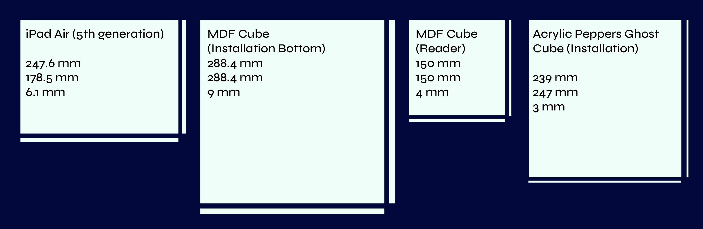
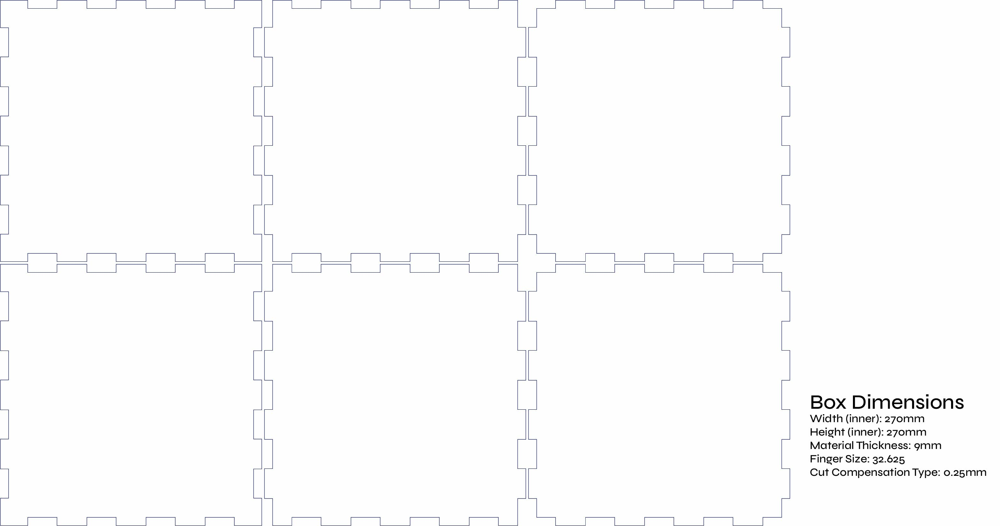
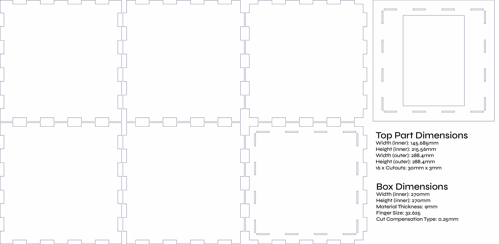
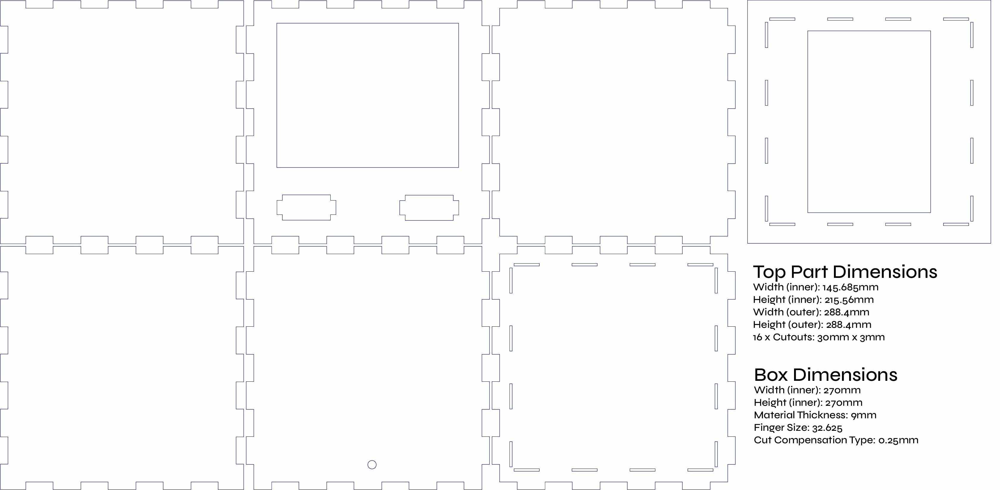
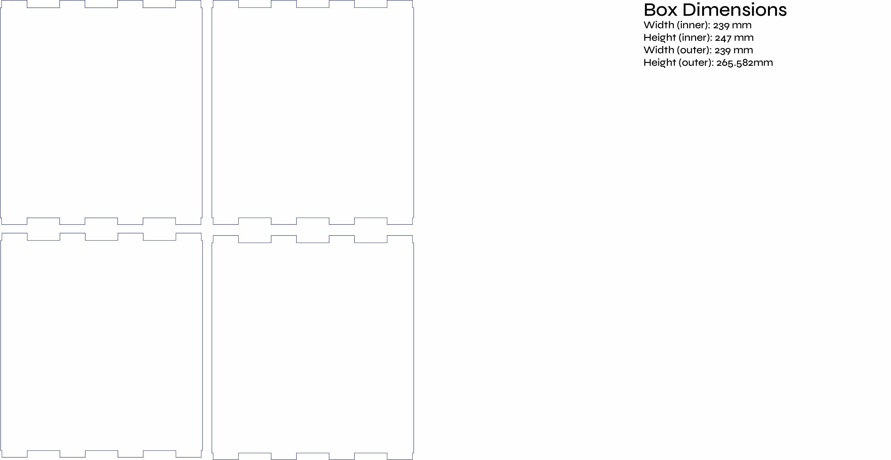
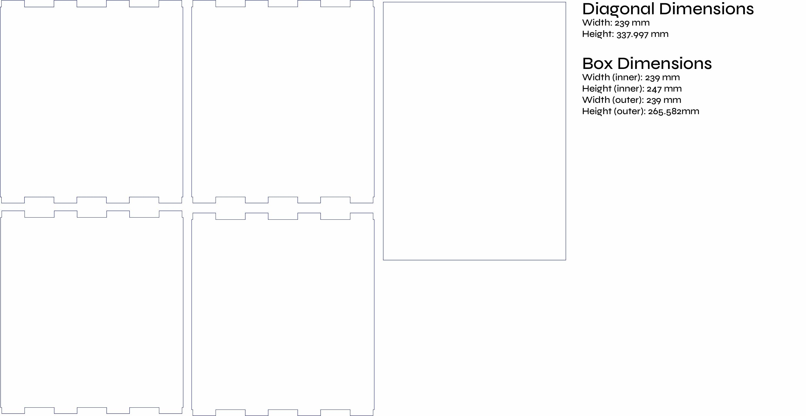
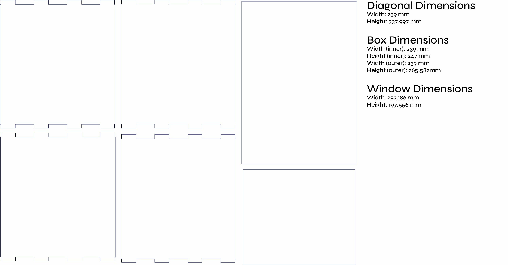
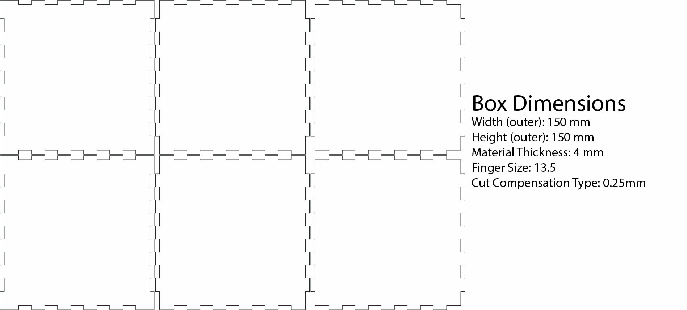
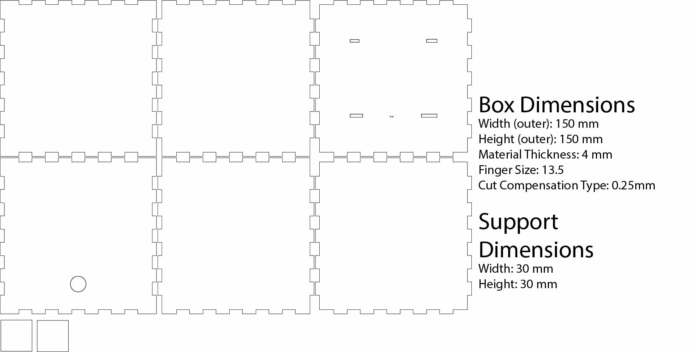

Design
Brand Design
- FIGMA: Design files (Brand Design)
Typography
Font Styles
Three font styles have been defined for the project, all sourced from Google Fonts:
- Primary Font: Outfit
- Secondary Font: Syne
- Code Font: Fira Code
Each font serves a specific purpose, ensuring a cohesive and structured typography system throughout the design.


Font Scale
For consistency in font scaling, the perfect fourth scale (1.333) has been applied. Font sizes have been slightly adjusted to avoid decimal pixel values, ensuring proper rendering. It's important to note that the defined heading scale serves as a general guideline rather than strict usage rules. For instance, an h1 element can adopt the heading 4 style if required by the design.


Colors
The color palette is designed to reinforce the futuristic, immersive, and data-driven aesthetics of Atmos. The combination of triadic colors and structured neutrals ensures a balance between holographic visuals, interactive elements, and readability while maintaining high contrast for clarity.
Primary Color
Aqua (#00F7FF)
A highly vibrant cyan that serves as the core identity color, defining the holographic glow, interactive UI elements, and real-time weather effects within the installation.

Secondary Colors
The secondary colors were determined using a triadic scheme, ensuring a dynamic and visually striking balance. These colors enhance the energy, contrast, and motion-based visuals within the project.
School Bus Yellow (#FFD900) Hollywood Cerise (#FF00AB)

Neutral & Structural Colors
Neutral colors provide structure and contrast, ensuring that UI elements remain legible while supporting a futuristic yet functional aesthetic.
Penn Blue (#030637)
A deep, near-black blue that acts as the primary dark background and text, enhancing visibility for bright, neon-lit elements.
Azure (#E8E8E8)
A soft, cool gray used for bright background surfaces and text, ensuring high readability against darker UI components.

Mesh Gradient
The Mesh Gradient blends the neutral colors (Penn Blue & Azure) with the primary Aqua to create a smooth, futuristic background effect. This gradient adds depth, fluidity, and a holographic feel, making it ideal for backgrounds, UI elements, and ambient lighting transitions.

Heat Scale Gradient
This gradient represents temperature changes, transitioning smoothly from cold to hot.
- Deep Blue to Cyan (#070E88 → #00F7FF) – Cold temperatures.
- Cyan to Yellow (#00F7FF → #FFD900) – Neutral and warming phases.
- Yellow to Red (#FFD900 → #FF645C) – High heat intensity.
- Red to Magenta (#FF645C → #FF00AB) – Extreme heat and storm energy.
This gradient is used for temperature-based lighting, UI elements, and visual transitions, ensuring clear and intuitive weather representation.

Physical Design
digital manufacturing technique(s) and material(s)
The manufacturing technique was selected based on the available resources at the MakersLab at HVA, ensuring feasibility. Material choices were made considering cost-effectiveness and precision to meet the project's requirements.
Technique
The design was created in Adobe Illustrator using vector-based files, which allowed precise layout for laser cutting.
Material
MDF (Medium-Density Fiberboard)
-
9mm MDF
-
Quantity: 1 sheet
- Size: 1220 mm × 610 mm × 9 mm
- Use: Main installation cube
-
Reasoning: Strong, affordable, and laser-compatible
-
4mm MDF
- Quantity: 1 sheet
- Size: 500 mm × 350 mm × 4 mm
- Use: Reader cube and smaller support elements
- Reasoning: Lightweight and sufficient for smaller structural parts
Acrylic (Plexiglas)
- 3mm Acrylic
- Quantity: 1 sheet
- Size: 600 mm × 1200 mm × 3 mm
- Use: Transparent parts for Pepper's Ghost cube
- Reasoning: Provides optical clarity and rigidity
Justification
These materials are both accessible and effective for structural and aesthetic needs.
DIGITAL DESIGN
Software
- Illustrator: Used to create precise vector-based design files for laser cutting. This software enables accurate cut line alignment and allows for easy modifications throughout the design process.
Design Proces
1. Added Sizes
Determined the base dimensions for the different parts such as the iPad, both device cubes, and the Pepper’s Ghost cube.
- Add rectangles and the dimensions in Illustrator
- Visualize all base sizes to get a clear spatial overview

2. Added MDF Installation Cube Cutouts
Created the bottom part of the installation cube using MakerCase.
- Create box with MakerCase
- Import the generated SVG into Illustrator
- Remove labels if not needed

3. Added MDF Installation Top Cutouts
Designed top panel with:
- Add a rectangle using the defined dimensions
- Cut a display window based on iPad size
- Add small slots for the Plexiglas joints (same height as Plexiglas thickness)

4. Added MDF Installation Part Cutouts
Extended the bottom cube with:
- Speaker cutout (shape depends on speaker, use Shape Builder if complex)
- Small circle cutout for USB power access on the back
- Added Plexiglas window cutout

5. Added Plexiglas Cube Cutouts
Outlined the Plexiglas cube and added joints using the Shape Builder tool.
- Add rectangles for each panel
- Align slot cuts from the MDF top
- Use Shape Builder to match joints

6. Added Plexiglas Diagonal Cutout
Calculated diagonal using Pythagoras. Added the angled reflective panel for Pepper’s Ghost.
- Add rectangle based on calculated diagonal height
- Width = inner width of the cube

7. Added Plexiglas Window Cutout
Created a viewing window in the Plexiglas for the bottom.
- Cut a slightly larger window than defined in Step 4
- Ensure it fits tightly without falling through

8. Added MDF Reader Cube Cutouts
Created the reader cube using MakerCase.
- Generate box with MakerCase
- Import into Illustrator
- Clean up labels

9. Added MDF Reader Part Cutouts
Integrated cutouts for sensor access and power.
- Measure sensors + LEDs
- Add rectangle + circle cutouts on the top
- Position for full accessibility
10. Added MDF Reader Support Cutouts
Created small support structures for stability.
- Add two 30mm × 30mm cutouts
- These act as internal support blocks

Version History
This section lists the project's Design files, with each version reflecting incremental updates and refinements.
Digital Design (Illustrator Files)
- 010 - Added MDF Reader Support Cutouts
- 009 - Added MDF Reader Part Cutouts
- 008 - Added MDF Reader Cube Cutouts
- 007 - Added Plexiglas Window Cutout
- 006 - Added Plexiglas Diagonal Cutout
- 005 - Added Plexiglas Cube Cutouts
- 004 - Added MDF Installation Part Cutouts
- 003 - Added MDF Installation Top Cutouts
- 002 - Added MDF Installation Cube Cutouts
- 001 - Added Sizes